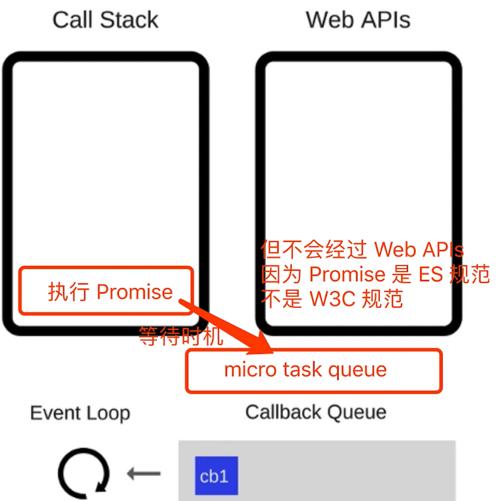
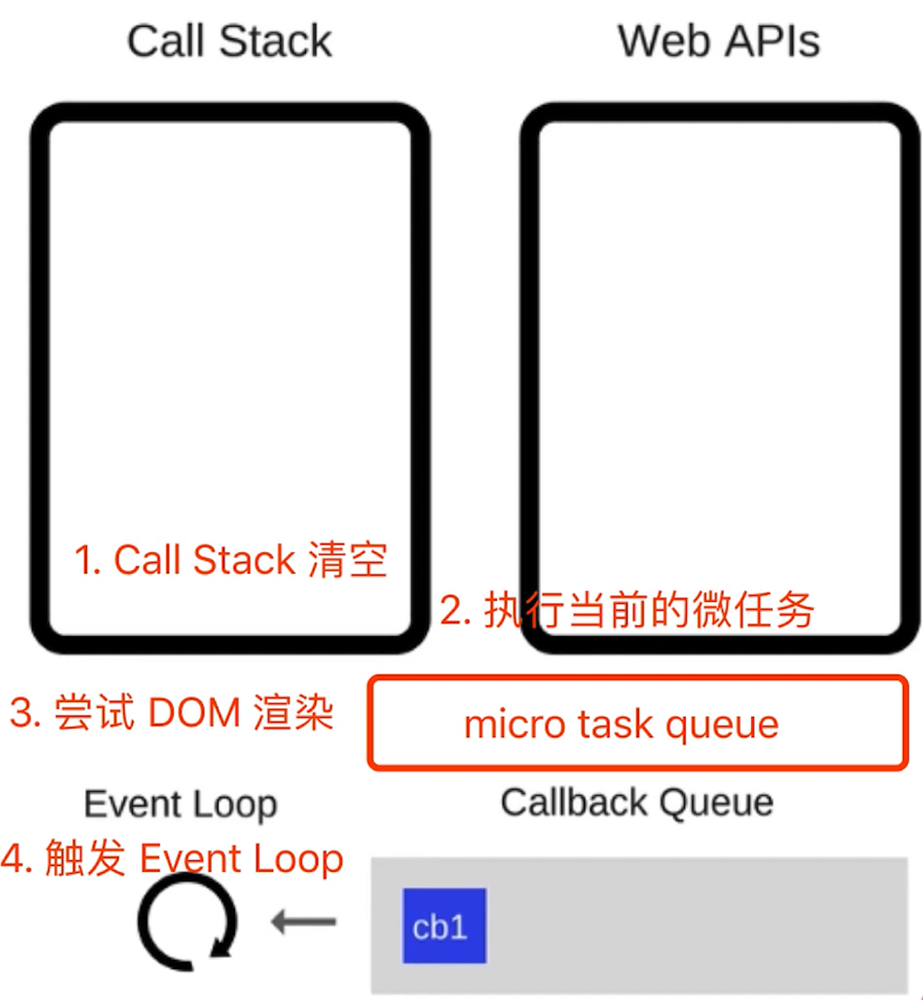

宏任务 macroTask 和微任务 microTask
1 | // 不同类型的异步执行顺序不同 |
- 宏任务：setTimeout、setInterval、Ajax、DOM 事件
- 微任务：Promise、async / await
- 微任务执行时机比宏任务要早
event loop 和 DOM 渲染
- JS 是单线程的，而且和 DOM 渲染共用一个线程
- JS 执行的时候，得留一些时机供 DOM 渲染
再次回顾 event loop 的过程
- 每一次 call stack 结束（每次轮询结束），同步任务执行完毕，都会触发 DOM 渲染（不一定非得渲染，就是给一次 DOM 渲染的机会！）
- 然后再触发下一次 Event Loop
触发 Event Loop 机制，如果 Callback Queue 里面执行完毕，也就是 call stack 再次空闲，又会尝试触发 DOM 渲染，然后再触发 Event Loop 机制，以此循环下去。
1 | const $p1 = $('<p>一段文字</p>') |
宏任务与微任务的区别
宏任务：在 DOM 渲染后触发，如 setTimeout
微任务：DOM 渲染前触发，如 Promise
1
2
3
4
5
6
7
8
9
10
11
12
13
14
15
16
17// 修改 DOM
const $p1 = $('<p>一段文字</p>')
const $p2 = $('<p>一段文字</p>')
const $p3 = $('<p>一段文字</p>')
$("#container").append($p1).append($p2).append($p3)
// 微任务：渲染之前执行（DOM 结构已更新）
// Promise.resolve().then(() => {
// const length = $('#container').children().length
// alert(`micro task ${length}`) // 3,DOM 没有渲染出来
// })
// 宏任务：渲染之后执行（DOM 结构已更新）
setTimeout(() => {
const length = $('#container').children().length
alert(`macro task ${length}`) // 3,DOM 已经渲染完毕
})
再深入思考一下：为何两者会有以上区别，一个在渲染前，一个在渲染后？
- 微任务：ES 语法标准之内，JS 引擎来统一处理。即，不用浏览器有任何干预，即可一次性处理完，更快更及时。
- 宏任务：ES 语法没有，JS 引擎不处理，浏览器（或 nodejs）干预处理。
从 event loop 解释，为何微任务执行更早
当执行 Promise 或 async/await 这种微任务的时候，会等待时机将它放在 micro task queue （与宏任务队列 Callba queue 是分开的）里面，而且不会经过 Web APIs ，因为 Promise 是 ES6 规范，不是 W3C 规范。
产生这种区别的原因是：
- 微任务是 ES6 语法规定的
- 宏任务是由浏览器规定的
因此在执行的时候分成了四步来完成：
微任务和宏任务-总结
- 宏任务有哪些？微任务有哪些？为什么微任务触发时机更早
- 微任务、宏任务和 DOM 渲染的关系
- 微任务、宏任务和 DOM 渲染，在 event loop 的过程
考题
描述 event loop 机制（可画图）
- 回顾 event loop 的过程
- 和 DOM 渲染的关系
- 微任务和宏任务在 event loop 过程中的不同处理
后两点可以先放一放，先把第一点讲清楚后，如果进阶问，再讲这块，否则一气讲完会很乱
什么事宏任务和微任务，两者区别
- 宏任务：setTimeout，setInterval、Ajax、DOM 事件
- 微任务：Promise、async/await
- 微任务执行时机比宏任务要早（再细就是微任务在 DOM 渲染前触发，宏任务在 DOM 渲染后触发）
Promise 的三种状态，如何变化
- pending、resolved、rejected
- pending -> resolved 或 pending -> rejected
- 变化不可逆
场景题 - promise then 和 catch 的连接
1 | // 第一题 |
场景题 - async / await 语法
1 | async function fn() { |
场景题 - Promise 和 setTimeout 的顺序
1 | console.log(100) |
场景题 - 外加 async / await 的顺序问题
1 | async function async1() { |
注：new Promise 时，传入的函数会立马被执行